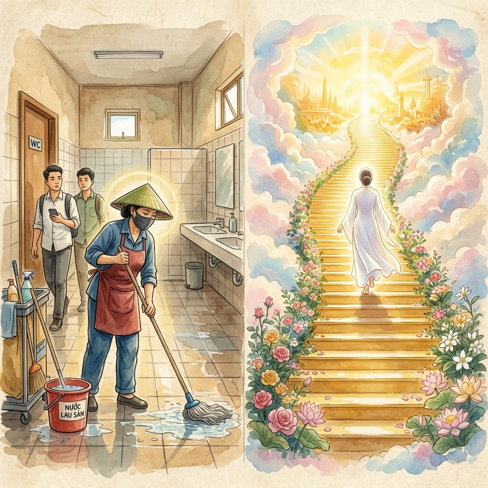
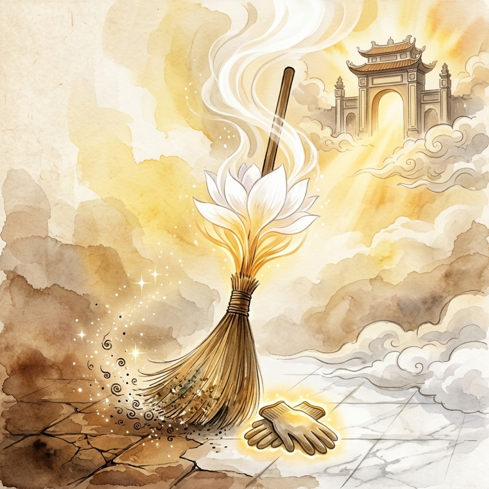
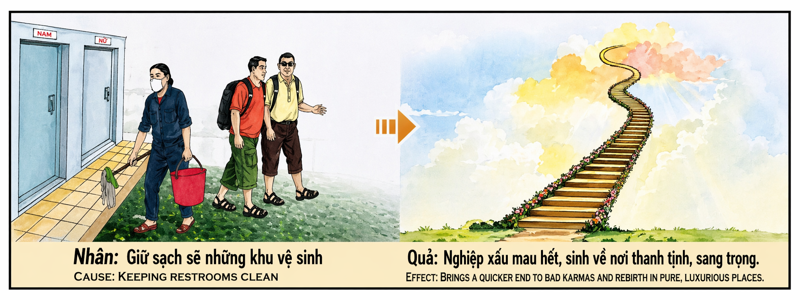

La Escoba Sagrada The Sacred Broom La Scopa Sacra 神圣的扫帚 المكنسة المقدسة Священная метла Der heilige Besen Le Balai Sacré 聖なる箒 A Vassoura Sagrada Cây Chổi Thiêng Liêng
"Quien limpia el lugar más humilde con amor puro, barre también las sombras de su karma y abre las puertas del cielo con una fregona." "Whoever cleans the humblest place with pure love also sweeps away the shadows of his karma and opens the doors of heaven with a mop." "Chi pulisce il luogo più umile con puro amore spazza via anche le ombre del suo karma e apre le porte del paradiso con uno straccio." “谁用纯洁的爱打扫最卑微的地方，谁就能扫除业障的阴影，用拖把打开天堂之门。” "من ينظف أتواضع مكان بالحب الخالص يمسح أيضًا ظلال كارماه ويفتح أبواب الجنة بالممسحة." «Тот, кто с чистой любовью убирает самое скромное место, также сметает тени своей кармы и открывает шваброй двери рая.». „Wer den bescheidensten Ort mit reiner Liebe reinigt, fegt auch die Schatten seines Karmas weg und öffnet mit einem Wischmopp die Türen des Himmels.“ « Celui qui nettoie le lieu le plus humble avec un amour pur balaie aussi les ombres de son karma et ouvre les portes du ciel avec une vadrouille. » 「純粋な愛で最もささやかな場所を掃除する人は、自分のカルマの影を一掃し、モップで天国の扉を開きます。」 "Quem limpa o lugar mais humilde com amor puro também varre as sombras do seu carma e abre as portas do céu com um esfregão." "Ai lau chùi nơi khiêm tốn nhất bằng tình yêu thuần khiết thì cũng quét sạch bóng tối nghiệp chướng của mình và mở cửa thiên đường bằng cây lau nhà."
En la jerarquía invisible del karma, hay un acto que brilla con una luz tan pura que tiene el poder de acelerar la disolución de las deudas espirituales acumuladas durante vidas enteras: limpiar los espacios donde los demás se purifican. Un baño público, una letrina, un aseo comunitario —esos lugares que todos necesitan pero que nadie quiere tocar— son los templos secretos del servicio desinteresado. Quien los limpia con dedicación y sin asco, sin esperar reconocimiento ni recompensa, está ejecutando una de las alquimias kármicas más poderosas que existen: transformar la suciedad exterior en pureza interior.
¿Por qué un acto tan aparentemente insignificante tiene un efecto kármico tan monumental? Porque limpiar lo que otros ensucian sin quejarse es la expresión más radical de la humildad. No hay cámaras filmando, no hay aplausos esperando, no hay premios Nobel para quienes friegan el suelo de un baño público a las cinco de la madrugada. Es el acto invisible por excelencia, y precisamente por eso, el universo lo recompensa con una generosidad que excede toda lógica humana. Cada baldosa que brilla por el trabajo de esas manos anónimas emite una frecuencia que los ángeles reconocen, que los guardianes kármicos registran y que las puertas del cielo no pueden ignorar.
El efecto descrito en este karma es doblemente hermoso: por un lado, el karma negativo acumulado se disipa con una velocidad extraordinaria, como si cada fregona pasada por el suelo barriera también las manchas del alma. Por otro, el destino siguiente —la próxima vida, el próximo ciclo— se abre en un lugar puro, elevado, luminoso. Es la ley de la correspondencia perfecta: quien creó pureza en el lugar más impuro del mundo, merece renacer en el lugar más puro del universo. No hay corona de rey que valga más que un par de guantes de goma gastados por el amor silencioso.
In the invisible hierarchy of karma, there is one act that shines with a light so pure that it has the power to accelerate the dissolution of spiritual debts accumulated over entire lifetimes: cleansing the spaces where others purify themselves. A public bathroom, a latrine, a community toilet—those places that everyone needs but no one wants to touch—are the secret temples of selfless service. Whoever cleans them with dedication and without disgust, without expecting recognition or reward, is executing one of the most powerful karmic alchemies that exist: transforming external dirt into internal purity.
Why does such a seemingly insignificant act have such a monumental karmic effect? Because cleaning up after others without complaining is the most radical expression of humility. There are no cameras filming, no applause waiting, no Nobel Prizes for those who scrub the floor of a public bathroom at five in the morning. It is the invisible act par excellence, and precisely for that reason, the universe rewards it with a generosity that exceeds all human logic. Each tile that shines from the work of those anonymous hands emits a frequency that the angels recognize, that the karmic guardians record and that the gates of heaven cannot ignore.
The effect described in this karma is doubly beautiful: on the one hand, the accumulated negative karma dissipates with extraordinary speed, as if each mop passed on the floor also swept away the stains of the soul. On the other hand, the next destiny—the next life, the next cycle—opens in a pure, elevated, luminous place. It is the law of perfect correspondence: whoever created purity in the most impure place in the world, deserves to be reborn in the purest place in the universe. There is no king's crown worth more than a pair of rubber gloves worn by silent love.
Nell'invisibile gerarchia del karma, c'è un atto che risplende di una luce così pura da avere il potere di accelerare lo scioglimento dei debiti spirituali accumulati in intere vite: pulire gli spazi dove altri si purificano. Un bagno pubblico, una latrina, un bagno comunitario – quei luoghi di cui tutti hanno bisogno ma nessuno vuole toccare – sono i templi segreti del servizio disinteressato. Chi li pulisce con dedizione e senza disgusto, senza aspettarsi riconoscimenti o ricompense, sta mettendo in atto una delle più potenti alchimie karmiche che esistano: trasformare lo sporco esterno in purezza interna.
Perché un atto così apparentemente insignificante ha un effetto karmico così monumentale? Perché fare pulizia senza lamentarsi è l’espressione più radicale dell’umiltà. Non ci sono telecamere che riprendono, né applausi in attesa, né premi Nobel per chi lava il pavimento di un bagno pubblico alle cinque del mattino. È l'atto invisibile per eccellenza, e proprio per questo l'universo lo ricompensa con una generosità che supera ogni logica umana. Ogni piastrella che risplende dell'opera di quelle mani anonime emette una frequenza che gli angeli riconoscono, che i guardiani karmici registrano e che le porte del cielo non possono ignorare.
L'effetto descritto in questo karma è doppiamente bello: da un lato, il karma negativo accumulato si dissipa con straordinaria velocità, come se ogni spazzolone passato sul pavimento spazzasse via anche le macchie dell'anima. D’altra parte, il prossimo destino – la prossima vita, il prossimo ciclo – si apre in un luogo puro, elevato, luminoso. È la legge della perfetta corrispondenza: chi ha creato la purezza nel luogo più impuro del mondo, merita di rinascere nel luogo più puro dell'universo. Non c'è corona reale che valga più di un paio di guanti di gomma indossati dall'amore silenzioso.
在无形的业力等级中，有一种行为闪耀着如此纯净的光芒，能够加速化解一生累积的精神债务：净化他人净化自己的空间。公共浴室、厕所、社区厕所——这些每个人都需要但没有人愿意碰触的地方——是无私服务的秘密圣殿。那些以奉献精神、不带厌恶、不期待认可或奖励来清洁它们的人，正在执行现存最强大的业力炼金术之一：将外部污垢转化为内部纯洁。
为什么这样一个看似微不足道的行为却有如此巨大的业力影响呢？因为不抱怨地替别人清理干净是谦逊最彻底的表现。没有摄像机拍摄，没有掌声等待，那些在早上五点擦洗公共浴室地板的人也没有诺贝尔奖。这是一种卓越的无形行为，正是因为这个原因，宇宙以超越所有人类逻辑的慷慨奖励它。这些无名之手所制作的每一块瓷砖都发出一种频率，天使可以识别这种频率，业力守护者会记录这种频率，而天堂之门也无法忽视这种频率。
这种业力所描述的效果是双重美丽的：一方面，积累的恶业以非凡的速度消散，仿佛地板上的每一把拖把也扫走了灵魂的污点。另一方面，下一个命运——下一个生命，下一个循环——在一个纯净、崇高、光明的地方开启。这是完美对应法则：谁在世界上最不纯洁的地方创造了纯洁，就应该投生到宇宙最纯洁的地方。没有什么王冠比沉默的爱所戴的一双橡胶手套更有价值。
في التسلسل الهرمي غير المرئي للكارما، هناك فعل واحد يضيء بنور نقي جدًا لدرجة أن لديه القدرة على تسريع حل الديون الروحية المتراكمة على مدى الحياة بأكملها: تطهير المساحات التي يطهر فيها الآخرون أنفسهم. إن الحمام العام، والمراحيض، والمراحيض المجتمعية — تلك الأماكن التي يحتاجها الجميع ولكن لا أحد يرغب في لمسها — هي المعابد السرية للخدمة المتفانية. من ينظفها بإخلاص ودون اشمئزاز، دون توقع التقدير أو المكافأة، فهو ينفذ واحدة من أقوى كيمياء الكارما الموجودة: تحويل الأوساخ الخارجية إلى نقاء داخلي.
لماذا يكون لمثل هذا الفعل الذي يبدو غير مهم مثل هذا التأثير الكرمي الهائل؟ لأن تنظيف أثر الآخرين دون شكوى هو التعبير الأكثر جذرية عن التواضع. لا توجد كاميرات تصوير، ولا انتظار تصفيق، ولا جوائز نوبل لأولئك الذين ينظفون أرضية الحمام العام في الخامسة صباحًا. إنه الفعل الخفي بامتياز، ولهذا السبب بالتحديد يكافئه الكون بكرم يفوق كل منطق بشري. كل قطعة تلمع من عمل تلك الأيدي المجهولة تبعث ترددًا تتعرف عليه الملائكة، ويسجله حراس الكارما ولا يمكن لأبواب السماء تجاهله.
التأثير الموصوف في هذه الكارما جميل بشكل مضاعف: من ناحية، تتبدد الكارما السلبية المتراكمة بسرعة غير عادية، كما لو أن كل ممسحة تمر على الأرض تزيل أيضًا بقع الروح. ومن ناحية أخرى، فإن المصير التالي – الحياة القادمة، الدورة القادمة – ينفتح في مكان نقي، مرتفع، ومضيء. إنه قانون التوافق التام: من خلق النقاء في أنقى مكان في العالم، يستحق أن يولد من جديد في أنقى مكان في الكون. ليس هناك تاج ملك يساوي أكثر من زوج من القفازات المطاطية التي يرتديها الحب الصامت.
В невидимой иерархии кармы есть одно действие, которое сияет настолько чистым светом, что обладает силой ускорить растворение духовных долгов, накопленных за целую жизнь: очищение пространств, где очищаются другие. Общественная ванная, уборная, общественный туалет — те места, которые нужны всем, но никто не хочет трогать, — это тайные храмы самоотверженного служения. Тот, кто очищает их самоотверженно и без отвращения, не ожидая признания или награды, совершает одну из самых мощных существующих кармических алхимий: превращает внешнюю грязь во внутреннюю чистоту.
Почему такой, казалось бы, незначительный поступок имеет такой колоссальный кармический эффект? Потому что убирать за другими, не жалуясь, — это самое радикальное выражение смирения. Никаких камер, никаких ожиданий аплодисментов, никаких Нобелевских премий для тех, кто моет пол в общественном туалете в пять утра. Это по преимуществу невидимый акт, и именно по этой причине Вселенная награждает его щедростью, превосходящей всю человеческую логику. Каждая плитка, сияющая от работы этих анонимных рук, излучает частоту, которую распознают ангелы, которую записывают кармические стражи и которую врата рая не могут игнорировать.
Эффект, описанный в этой карме, прекрасен вдвойне: с одной стороны, накопленная негативная карма рассеивается с необычайной скоростью, словно каждая швабра, пройденная по полу, сметает и пятна души. С другой стороны, следующая судьба – следующая жизнь, следующий цикл – открывается в чистом, возвышенном, светлом месте. Это закон совершенного соответствия: тот, кто создал чистоту в самом нечистом месте мира, заслуживает перерождения в самом чистом месте вселенной. Нет королевской короны дороже, чем пара резиновых перчаток, надетых молчаливой любовью.
In der unsichtbaren Hierarchie des Karma gibt es eine Handlung, die mit einem so reinen Licht erstrahlt, dass sie die Kraft hat, die Auflösung spiritueller Schulden, die sich über ein ganzes Leben hinweg angesammelt haben, zu beschleunigen: die Reinigung der Räume, in denen andere sich reinigen. Eine öffentliche Toilette, eine Latrine, eine Gemeinschaftstoilette – jene Orte, die jeder braucht, aber niemand berühren möchte – sind die geheimen Tempel des selbstlosen Dienstes. Wer sie mit Hingabe und ohne Ekel reinigt, ohne Anerkennung oder Belohnung zu erwarten, vollzieht eine der mächtigsten karmischen Alchemien, die es gibt: die Umwandlung von äußerem Schmutz in innere Reinheit.
Why does such a seemingly insignificant act have such a monumental karmic effect? Denn hinter anderen aufzuräumen, ohne sich zu beschweren, ist der radikalste Ausdruck von Demut. Es gibt keine filmenden Kameras, keinen wartenden Applaus, keine Nobelpreise für diejenigen, die um fünf Uhr morgens den Boden einer öffentlichen Toilette schrubben. It is the invisible act par excellence, and precisely for that reason, the universe rewards it with a generosity that exceeds all human logic. Jede Fliese, die durch die Arbeit dieser anonymen Hände leuchtet, strahlt eine Frequenz aus, die die Engel erkennen, die karmischen Wächter aufzeichnen und die die Tore des Himmels nicht ignorieren können.
Der in diesem Karma beschriebene Effekt ist doppelt schön: Einerseits löst sich das angesammelte negative Karma mit außerordentlicher Geschwindigkeit auf, als würde jeder über den Boden streichende Wischmopp auch die Flecken der Seele wegfegen. Andererseits öffnet sich das nächste Schicksal – das nächste Leben, der nächste Zyklus – an einem reinen, erhabenen, leuchtenden Ort. Es ist das Gesetz der perfekten Übereinstimmung: Wer auch immer am unreinsten Ort der Welt Reinheit geschaffen hat, verdient es, am reinsten Ort des Universums wiedergeboren zu werden. Es gibt keine Königskrone, die mehr wert ist als ein Paar Gummihandschuhe, die von stiller Liebe getragen werden.
Dans la hiérarchie invisible du karma, il est un acte qui brille d’une lumière si pure qu’il a le pouvoir d’accélérer la dissolution des dettes spirituelles accumulées au cours de vies entières : nettoyer les espaces où les autres se purifient. Des toilettes publiques, des latrines, des toilettes communautaires – ces endroits dont tout le monde a besoin mais que personne ne veut toucher – sont les temples secrets du service désintéressé. Celui qui les nettoie avec dévouement et sans dégoût, sans attendre de reconnaissance ou de récompense, exécute l'une des alchimies karmiques les plus puissantes qui existent : transformer la saleté externe en pureté interne.
Pourquoi un acte apparemment insignifiant a-t-il un effet karmique si monumental ? Parce que nettoyer après les autres sans se plaindre est l’expression la plus radicale de l’humilité. Il n’y a pas de caméras qui filment, pas d’applaudissements, pas de prix Nobel pour ceux qui nettoient le sol des toilettes publiques à cinq heures du matin. C’est l’acte invisible par excellence, et c’est précisément pour cette raison que l’univers le récompense avec une générosité qui dépasse toute logique humaine. Chaque tuile qui brille grâce au travail de ces mains anonymes émet une fréquence que les anges reconnaissent, que les gardiens karmiques enregistrent et que les portes du ciel ne peuvent ignorer.
L'effet décrit dans ce karma est doublement beau : d'une part, le karma négatif accumulé se dissipe avec une rapidité extraordinaire, comme si chaque vadrouille passée sur le sol balayait aussi les taches de l'âme. En revanche, le prochain destin – la prochaine vie, le prochain cycle – s’ouvre dans un lieu pur, élevé et lumineux. C'est la loi de la correspondance parfaite : celui qui a créé la pureté dans l'endroit le plus impur du monde mérite de renaître dans l'endroit le plus pur de l'univers. Il n'y a pas de couronne royale qui vaut plus qu'une paire de gants en caoutchouc portés par un amour silencieux.
カルマの目に見えない階層の中で、生涯にわたって蓄積された霊的負債の解消を加速する力を持つほど純粋な光で輝く行為が 1 つあります。それは、他人が自分自身を浄化する空間を浄化することです。公衆トイレ、トイレ、共同トイレなど、誰もが必要としているのに誰も触れたくない場所は、無私の奉仕の秘密の神殿です。承認や報酬を期待せず、献身的に嫌悪感を抱かずに汚れを掃除する人は、存在する最も強力なカルマの錬金術の 1 つを実行していることになります。それは、外部の汚れを内部の純粋さに変えることです。
なぜこのように一見取るに足らない行為がこれほど大きなカルマ効果をもたらすのでしょうか?なぜなら、文句を言わずに他人の後始末をすることは、謙虚さの最も過激な表現だからです。カメラが撮影することも、待っている拍手もありません。朝5時に公衆トイレの床を磨く人にノーベル賞が与えられることもありません。それは目に見えない卓越した行為であり、まさにその理由から、宇宙は人間の論理を超えた寛大さでそれに報いるのです。これらの匿名の手の働きによって輝く各タイルは、天使が認識し、カルマの守護者が記録し、天国の門が無視できない周波数を放射します。
このカルマで説明される効果は二重に美しいです。一方では、床を通過するモップのひとつひとつが魂の汚れを一掃するかのように、蓄積された負のカルマが異常な速度で消散します。一方、次の運命、つまり次の人生、次のサイクルは、純粋で高尚な明るい場所で開かれます。それは完全一致の法則です。世界で最も不純な場所に純粋さを創造した者は、宇宙で最も純粋な場所に生まれ変わる資格があります。沈黙の愛が着用するゴム手袋以上に価値のある王の冠はありません。
Na hierarquia invisível do carma, existe um ato que brilha com uma luz tão pura que tem o poder de acelerar a dissolução de dívidas espirituais acumuladas ao longo de vidas inteiras: limpar os espaços onde outros se purificam. Uma casa de banho pública, uma latrina, uma casa de banho comunitária – aqueles lugares que todos precisam mas ninguém quer tocar – são os templos secretos do serviço altruísta. Quem os limpa com dedicação e sem nojo, sem esperar reconhecimento ou recompensa, está executando uma das mais poderosas alquimias cármicas que existem: transformar sujeira externa em pureza interna.
Por que um ato aparentemente tão insignificante tem um efeito cármico tão monumental? Porque limpar a sujeira dos outros sem reclamar é a expressão mais radical da humildade. Não há câmeras filmando, nem aplausos à espera, nem prêmios Nobel para quem esfrega o chão de um banheiro público às cinco da manhã. É o ato invisível por excelência e, justamente por isso, o universo o recompensa com uma generosidade que ultrapassa toda a lógica humana. Cada azulejo que brilha do trabalho daquelas mãos anônimas emite uma frequência que os anjos reconhecem, que os guardiões cármicos registram e que as portas do céu não podem ignorar.
O efeito descrito neste carma é duplamente belo: por um lado, o carma negativo acumulado se dissipa com extraordinária velocidade, como se cada esfregão passado no chão também varresse as manchas da alma. Por outro lado, o próximo destino – a próxima vida, o próximo ciclo – abre-se num lugar puro, elevado e luminoso. É a lei da correspondência perfeita: quem criou a pureza no lugar mais impuro do mundo merece renascer no lugar mais puro do universo. Não existe coroa de rei que valha mais do que um par de luvas de borracha usadas pelo amor silencioso.
Trong hệ thống cấp bậc vô hình của nghiệp báo, có một hành động tỏa sáng với ánh sáng thuần khiết đến mức có khả năng đẩy nhanh quá trình hóa giải các món nợ tinh thần tích lũy trong suốt cuộc đời: làm sạch không gian nơi người khác tự thanh lọc mình. Phòng tắm công cộng, nhà vệ sinh, nhà vệ sinh cộng đồng—những nơi mà mọi người đều cần nhưng không ai muốn chạm tới—là những ngôi đền bí mật của sự phục vụ vị tha. Bất cứ ai làm sạch chúng với lòng tận tâm và không ghê tởm, không mong được công nhận hay khen thưởng, là đang thực hiện một trong những thuật giả kim nghiệp mạnh mẽ nhất hiện có: chuyển hóa bụi bẩn bên ngoài thành sự trong sạch bên trong.
Tại sao một hành động tưởng chừng như không đáng kể như vậy lại có kết quả nghiệp báo to lớn như vậy? Bởi vì dọn dẹp sau người khác mà không phàn nàn là biểu hiện triệt để nhất của sự khiêm tốn. Không có máy quay, không có tiếng vỗ tay chờ đợi, không có giải thưởng Nobel dành cho những người lau sàn nhà vệ sinh công cộng lúc năm giờ sáng. Đó là hành động vô hình xuất sắc nhất, và chính vì lý do đó mà vũ trụ ban thưởng cho nó một sự hào phóng vượt quá mọi logic của con người. Mỗi viên gạch tỏa sáng từ tác phẩm của những bàn tay vô danh đó đều phát ra một tần số mà các thiên thần nhận ra, những người bảo vệ nghiệp báo ghi lại và những cánh cổng thiên đường không thể bỏ qua.
Hiệu ứng được mô tả trong nghiệp này đẹp gấp đôi: một mặt, ác nghiệp tích lũy tiêu tan với tốc độ phi thường, như thể mỗi cây lau sàn đi qua cũng cuốn trôi đi những vết nhơ của tâm hồn. Mặt khác, số phận tiếp theo – đời sau, chu kỳ tiếp theo – sẽ mở ra ở một nơi thanh tịnh, cao cả và sáng ngời. Đó là quy luật tương ứng hoàn hảo: ai tạo được sự thanh tịnh ở nơi bất tịnh nhất thế giới thì xứng đáng được tái sinh vào nơi thanh tịnh nhất vũ trụ. Không có chiếc vương miện nào của nhà vua giá trị hơn đôi găng tay cao su mà tình yêu thầm lặng đeo.
La Mujer Que Barría Estrellas
The Woman Who Swept Stars
La donna che travolse le stelle
横扫星辰的女人
المرأة التي اجتاحت النجوم
Женщина, которая метла звезды
Die Frau, die Sterne fegte
La femme qui balayait les étoiles
星を席巻する女
A mulher que varreu as estrelas
Người phụ nữ quét sao
En las afueras de Hội An había una estación de autobuses con los baños más sucios de toda la provincia. Nadie quería aquel trabajo. Hasta que llegó una mujer llamada Phượng, viuda de cincuenta y tres años, que aceptó el puesto que todos rechazaban. Phượng no limpiaba aquellos baños como quien cumple una condena: los limpiaba como quien cuida un jardín. Cada mañana, a las cuatro, fregaba las baldosas con jabón de jazmín que ella misma preparaba. Pulía los espejos hasta que reflejaban el amanecer. Ponía una flor fresca —siempre una flor— en un vasito junto a cada lavabo.
Los conductores se burlaban: «¿Para qué pones flores en un váter?». Ella sonreía sin responder. Un niño de seis años llamado Minh, que viajaba cada semana con su madre, siempre corría a saludarla: «¡Tía Phượng, hoy hay un jazmín!». Y ella le respondía arrodillándose: «Porque hoy es un buen día para que todo esté limpio, cariño. Incluso los lugares que nadie mira merecen estar bonitos».
Una noche de monzón, el río se desbordó e inundó la estación. Todos huyeron. Phượng se quedó. Con el barro hasta las rodillas, ayudó a una anciana a salir del agua, cargó a tres niños aterrados, improvisó refugio en el techo. Cuando los rescatistas llegaron, encontraron a Phượng empapada, abrazando a siete personas que había salvado. Un bombero dijo: «Señora, usted es una heroína». Phượng respondió tiritando: «No, hijo. Yo solo limpio. Y esta noche, lo que había que limpiar eran las lágrimas».
Phượng murió tres años después, dormida, con una sonrisa inexplicable. El pequeño Minh llevó una flor de jazmín a su tumba cada semana durante un año. La leyenda cuenta que, la noche que Phượng falleció, los vecinos vieron una escalera de luz dorada que descendía desde las nubes hasta su ventana, con cada peldaño cubierto de flores frescas. Porque el universo no olvida a quienes limpian lo que nadie quiere tocar. Y a quienes barren el suelo con amor, les reserva el privilegio de barrer las estrellas.
On the outskirts of Hội An there was a bus station with the dirtiest toilets in the entire province. Nobody wanted that job. Until a woman named Phượng, a fifty-three-year-old widow, arrived and accepted the position that everyone rejected. Phượng did not clean those bathrooms like someone serving a sentence: he cleaned them like someone tending a garden. Every morning, at four o'clock, she scrubbed the tiles with jasmine soap that she prepared herself. He polished the mirrors until they reflected the dawn. She put a fresh flower—always a flower—in a small glass next to each sink.
The drivers mocked: "Why do you put flowers in a toilet?" She smiled without answering. A six-year-old boy named Minh, who traveled with his mother every week, always ran to greet her: "Aunt Phượng, there is a jasmine today!" And she responded by kneeling down: "Because today is a good day for everything to be clean, darling. Even places that no one looks at deserve to be beautiful.
One monsoon night, the river overflowed its banks and flooded the station. They all fled. Phượng stayed. With mud up to his knees, he helped an old woman out of the water, picked up three terrified children, and improvised shelter on the roof. When rescuers arrived, they found Phượng soaked, hugging seven people she had saved. A firefighter said, “Madam, you are a hero.” Phượng replied shivering: “No, son. I just clean. And tonight, what had to be cleaned were the tears.
Phượng died three years later, in her sleep, with an inexplicable smile. Little Minh brought a jasmine flower to her grave every week for a year. Legend has it that on the night Phượng died, neighbors saw a ladder of golden light descending from the clouds to their window, with each step covered in fresh flowers. Because the universe does not forget those who clean what no one wants to touch. And for those who sweep the ground with love, He reserves the privilege of sweeping the stars.
Alla periferia di Hội An c’era una stazione degli autobus con i bagni più sporchi dell’intera provincia. Nessuno voleva quel lavoro. Finché arrivò una donna di nome Phượng, una vedova di cinquantatré anni, che accettò la posizione che tutti rifiutavano. Phượng non puliva quei bagni come chi sta scontando una pena: li puliva come chi cura un giardino. Ogni mattina, alle quattro, strofinava le piastrelle con il sapone al gelsomino che preparava lei stessa. Lucidò gli specchi finché non rifletterono l'alba. Metteva un fiore fresco, sempre un fiore, in un bicchierino accanto a ciascun lavandino.
Gli autisti lo deridevano: "Perché metti i fiori nel water?" Lei sorrise senza rispondere. Un bambino di sei anni di nome Minh, che viaggiava con sua madre ogni settimana, correva sempre a salutarla: "Zia Phượng, oggi c'è un gelsomino!" E lei rispose inginocchiandosi: "Perché oggi è un buon giorno perché tutto sia pulito, tesoro. Anche i posti che nessuno guarda meritano di essere belli.
Una notte di monsone, il fiume straripò e allagò la stazione. Sono fuggiti tutti. Phượng rimase. Con il fango fino alle ginocchia, aiutò una vecchia a uscire dall'acqua, raccolse tre bambini terrorizzati e improvvisò un riparo sul tetto. Quando i soccorritori sono arrivati, hanno trovato Phượng fradicio, che abbracciava sette persone che aveva salvato. Un pompiere ha detto: “Signora, lei è un eroe”. Phượng rispose tremando: "No, figliolo. Io pulisco e basta. E stasera, ciò che doveva essere pulito erano le lacrime. "
Phượng morì tre anni dopo, nel sonno, con un sorriso inspiegabile. La piccola Minh portò un fiore di gelsomino sulla sua tomba ogni settimana per un anno. La leggenda narra che la notte in cui Phượng morì, i vicini videro una scala di luce dorata scendere dalle nuvole fino alla loro finestra, con ogni gradino ricoperto di fiori freschi. Perché l'universo non dimentica chi pulisce ciò che nessuno vuole toccare. E a chi spazza la terra con amore Egli riserva il privilegio di spazzare le stelle.
会安郊区有一个公交车站，里面的厕所是全省最脏的。没有人想要那份工作。直到一位名叫 Phượng 的五十三岁寡妇到来，接受了所有人都拒绝的职位。 Phượng 并没有像服刑的人那样打扫这些浴室：他像打理花园一样打扫它们。每天早上四点钟，她都会用自己准备的茉莉香皂擦洗瓷砖。他擦亮镜子，直到它们反射出黎明的光。她在每个水槽旁边的一个小玻璃杯里放了一朵鲜花——总是一朵花。
司机们嘲笑道：“你为什么要在厕所里放花？”她微笑着没有回答。每周和母亲一起旅行的六岁男孩Minh总是跑来迎接她：“Phượng阿姨，今天有茉莉花！”她跪下回应道：“因为今天是一切都干净的好日子，亲爱的。即使是没人看的地方也应该是美丽的。”
一个季风之夜，河水漫过堤岸，淹没了车站。他们都逃走了。冯留下来了。泥浆没过膝盖，他把一位老妇人从水中救了出来，救起三个受惊的孩子，并在屋顶上搭建了临时避难所。当救援人员到达时，他们发现 Phượng 浑身湿透，拥抱着她救过的七个人。一名消防员说：“女士，你是英雄。” Phượng 颤抖着回答：“不，儿子。我只是清洁。今晚，需要清洁的是眼泪。”
三年后，Phượng 在睡梦中去世，脸上带着莫名的微笑。小明一年来每周都会把一朵茉莉花带到她的坟墓里。相传在冯去世的那天晚上，邻居们看到一道金光的梯子从云端降到他们的窗户上，每一个台阶都铺满了鲜花。因为宇宙不会忘记那些清理无人愿意触及的东西的人。对于那些用爱扫地的人，他保留了扫星星的特权。
في ضواحي هوي آن، كانت هناك محطة للحافلات بها المراحيض الأكثر قذارة في المقاطعة بأكملها. لا أحد يريد هذه الوظيفة. حتى وصلت امرأة تدعى فونج، أرملة تبلغ من العمر ثلاثة وخمسين عامًا، وقبلت المنصب الذي رفضه الجميع. لم يقم Phượng بتنظيف تلك الحمامات مثل شخص يقضي عقوبة: لقد كان ينظفها مثل شخص يعتني بالحديقة. في كل صباح، في الساعة الرابعة، كانت تفرك البلاط بصابون الياسمين الذي أعدته بنفسها. لقد صقل المرايا حتى عكست الفجر. لقد وضعت زهرة نضرة - زهرة دائمًا - في كوب صغير بجوار كل حوض.
وسخر السائقون: لماذا تضعون الزهور في المرحاض؟ ابتسمت دون أن تجيب. كان الصبي مينه البالغ من العمر ست سنوات، والذي يسافر مع والدته كل أسبوع، يركض دائمًا لاستقبالها: "العمة فونج، هناك ياسمين اليوم!" وأجابت بالركوع: "لأن اليوم هو يوم جيد ليكون كل شيء نظيفاً يا عزيزتي. حتى الأماكن التي لا ينظر إليها أحد تستحق أن تكون جميلة".
في إحدى ليالي الرياح الموسمية، فاض النهر على ضفافه وأغرق المحطة. لقد فروا جميعا. بقي فونج. ومع الطين الذي يصل إلى ركبتيه، ساعد امرأة عجوز على الخروج من الماء، وانتشل ثلاثة أطفال مذعورين، وأقام مأوى مرتجلاً على السطح. عندما وصل رجال الإنقاذ، وجدوا فونج مبللة، وهي تعانق سبعة أشخاص أنقذتهم. قال أحد رجال الإطفاء: "سيدتي، أنت بطلة". أجاب فونج وهو يرتجف: "لا يا بني. أنا فقط أنظف. والليلة، ما كان يجب تنظيفه هو الدموع".
توفيت فونج بعد ثلاث سنوات أثناء نومها بابتسامة لا يمكن تفسيرها. كانت مينه الصغيرة تجلب زهرة الياسمين إلى قبرها كل أسبوع لمدة عام. تقول الأسطورة أنه في الليلة التي مات فيها فونج، رأى الجيران سلمًا من الضوء الذهبي ينزل من السحب إلى نافذتهم، وكانت كل خطوة مغطاة بالزهور الطازجة. لأن الكون لا ينسى من ينظف ما لا يريد أحد أن يلمسه. ولمن يكنس الأرض بالحب، يحتفظ بامتياز كنس النجوم.
На окраине Хойана находился автовокзал с самыми грязными туалетами во всей провинции. Никто не хотел эту работу. Пока не приехала женщина по имени Фуанг, пятидесятитрехлетняя вдова, и не приняла позицию, которую все отвергли. Фыонг не убирал эти ванные комнаты, как отбывающий наказание: он убирал их, как человек, ухаживающий за садом. Каждое утро, в четыре часа, она мыла плитку жасминовым мылом, которое готовила сама. Он полировал зеркала, пока в них не отражался рассвет. Она поставила свежий цветок — всегда цветок — в маленький стакан рядом с каждой раковиной.
Водители издевались: «Зачем вы ставите цветы в туалет?» Она улыбнулась, не ответив. Шестилетний мальчик по имени Минь, который каждую неделю путешествовал со своей матерью, всегда бежал ее поприветствовать: «Тетя Фонг, сегодня жасмин!» И она ответила, опустившись на колени: «Потому что сегодня хороший день, чтобы все было чисто, дорогой. Даже места, на которые никто не смотрит, заслуживают того, чтобы быть красивыми.
Однажды муссонной ночью река вышла из берегов и затопила станцию. Они все бежали. Фонг остался. По колени в грязи он помог старухе выбраться из воды, подобрал троих перепуганных детей и устроил импровизированное укрытие на крыше. Когда прибыли спасатели, они обнаружили Фуонг мокрой, обнимающей семь человек, которых она спасла. Пожарный сказал: «Мадам, вы герой». Пыонг ответил, дрожа: "Нет, сынок. Я просто убираюсь. А сегодня вечером нужно было вымыть слезы.
Фыонг умерла три года спустя во сне с необъяснимой улыбкой. Маленькая Мин приносила на могилу цветок жасмина каждую неделю в течение года. Легенда гласит, что в ночь смерти Пхана соседи увидели лестницу золотого света, спускающуюся из облаков к их окну, каждая ступенька которой была покрыта свежими цветами. Потому что Вселенная не забывает тех, кто убирает то, чего никто не хочет трогать. А тем, кто с любовью подметает землю, Он оставляет привилегию подметать звезды.
Am Stadtrand von Hội An befand sich eine Bushaltestelle mit den schmutzigsten Toiletten der gesamten Provinz. Niemand wollte diesen Job. Bis eine Frau namens Phượng, eine 53-jährige Witwe, kam und die Position annahm, die alle ablehnten. Phượng putzte diese Badezimmer nicht wie jemand, der eine Strafe verbüßt: Er putzte sie wie jemand, der einen Garten pflegt. Jeden Morgen um vier Uhr schrubbte sie die Fliesen mit selbst zubereiteter Jasminseife. Er polierte die Spiegel, bis sie die Morgendämmerung widerspiegelten. Sie stellte eine frische Blume – immer eine Blume – in ein kleines Glas neben jedes Waschbecken.
Die Fahrer spotteten: „Warum legt man Blumen in eine Toilette?“ Sie lächelte, ohne zu antworten. Ein sechsjähriger Junge namens Minh, der jede Woche mit seiner Mutter reiste, rannte ihr immer entgegen: „Tante Phượng, heute gibt es einen Jasmin!“ Und sie antwortete, indem sie sich hinkniete: „Weil heute ein guter Tag ist, an dem alles sauber ist, Liebling. Auch Orte, auf die niemand schaut, verdienen es, schön zu sein.“
In einer Monsunnacht trat der Fluss über die Ufer und überschwemmte die Station. Sie flohen alle. Phượng blieb. Mit bis zu den Knien reichendem Schlamm half er einer alten Frau aus dem Wasser, hob drei verängstigte Kinder auf und baute improvisierten Unterschlupf auf dem Dach. Als die Retter eintrafen, fanden sie Phượng durchnässt vor, wie sie sieben Menschen umarmte, die sie gerettet hatte. Ein Feuerwehrmann sagte: „Madam, Sie sind eine Heldin.“ Phượng antwortete zitternd: „Nein, mein Sohn. Ich putze nur. Und was heute Abend gereinigt werden musste, waren die Tränen.“
Phượng starb drei Jahre später im Schlaf mit einem unerklärlichen Lächeln. Ein Jahr lang brachte die kleine Minh jede Woche eine Jasminblüte zu ihrem Grab. Der Legende nach sahen die Nachbarn in der Nacht, in der Phượng starb, eine Leiter aus goldenem Licht, die von den Wolken zu ihrem Fenster hinabstieg, und jede Stufe war mit frischen Blumen bedeckt. Denn das Universum vergisst diejenigen nicht, die reinigen, was niemand anfassen möchte. Und für diejenigen, die mit Liebe den Boden fegen, behält er sich das Privileg vor, die Sterne zu fegen.
À la périphérie de Hội An se trouvait une gare routière dotée des toilettes les plus sales de toute la province. Personne ne voulait de ce travail. Jusqu'à ce qu'une femme nommée Phượng, une veuve de cinquante-trois ans, arrive et accepte le poste que tout le monde rejetait. Phượng ne nettoyait pas ces toilettes comme quelqu’un purgeant une peine : il les nettoyait comme quelqu’un qui entretient un jardin. Chaque matin, à quatre heures, elle frottait les carreaux avec du savon au jasmin qu'elle préparait elle-même. Il polit les miroirs jusqu'à ce qu'ils reflètent l'aube. Elle a mis une fleur fraîche – toujours une fleur – dans un petit verre à côté de chaque évier.
Les chauffeurs se moquaient : « Pourquoi mets-tu des fleurs dans les toilettes ? Elle sourit sans répondre. Un garçon de six ans nommé Minh, qui voyageait avec sa mère chaque semaine, courait toujours pour la saluer : « Tante Phượng, il y a un jasmin aujourd'hui ! Et elle a répondu en s'agenouillant : "Parce qu'aujourd'hui est un bon jour pour que tout soit propre, chérie. Même les endroits que personne ne regarde méritent d'être beaux.
Une nuit de mousson, la rivière est sortie de son lit et a inondé la gare. Ils ont tous fui. Phượng est resté. La boue jusqu'aux genoux, il a aidé une vieille femme à sortir de l'eau, a ramassé trois enfants terrifiés et a improvisé un abri sur le toit. Lorsque les sauveteurs sont arrivés, ils ont trouvé Phượng trempée, serrant dans ses bras sept personnes qu'elle avait sauvées. Un pompier a dit : « Madame, vous êtes une héroïne. » Phượng répondit en frissonnant : "Non, mon fils. Je viens de nettoyer. Et ce soir, ce qu'il fallait nettoyer, ce sont les larmes. "
Phượng mourut trois ans plus tard, dans son sommeil, avec un sourire inexplicable. La petite Minh apportait une fleur de jasmin sur sa tombe chaque semaine pendant un an. La légende raconte que la nuit de la mort de Phượng, les voisins ont vu une échelle de lumière dorée descendre des nuages jusqu'à leur fenêtre, chaque marche étant couverte de fleurs fraîches. Parce que l’univers n’oublie pas ceux qui nettoient ce que personne ne veut toucher. Et à ceux qui balayent la terre avec amour, Il réserve le privilège de balayer les étoiles.
ホイアン郊外に、省全体で最も汚いトイレを備えたバス停がありました。誰もその仕事を望んでいませんでした。 53歳の未亡人であるPhượngという名前の女性が到着し、誰もが拒否した立場を受け入れるまでは。 Phượng さんは、刑に服している人のようにバスルームを掃除したのではなく、庭の手入れをしている人のようにバスルームを掃除していました。彼女は毎朝4時に、自分で用意したジャスミン石鹸でタイルをこすった。彼は夜明けが映るまで鏡を磨きました。彼女は、各シンクの横にある小さなグラスに生花を――いつも花を――生けました。
運転手たちは「なぜトイレに花を置くんだ？」と嘲笑した。彼女は答えずに微笑んだ。母親と一緒に毎週旅行をしていたミンという名前の 6 歳の男の子は、いつも走って母親に挨拶しました。「フォンおばさん、今日はジャスミンがあるよ！」そして彼女はひざまずいて答えた、「だって、今日はすべてがきれいになるのに良い日だから、愛しい人。誰も見向きもしない場所であっても、美しくあるべきなのよ。」
あるモンスーンの夜、川が堤防を氾濫させ、駅が水浸しになった。彼らは全員逃げた。 Phượngは滞在しました。膝まで泥をかぶった彼は、老婦人を水から助け出し、怯える３人の子供を抱き上げ、即席で屋上に避難した。救助隊が到着すると、フォンさんはずぶ濡れになって、救った7人を抱きしめているのが見つかった。消防士は「奥様、あなたは英雄です」と言った。 「いいえ、息子。私は掃除をしているだけです。そして今夜、掃除しなければならなかったのは涙です。」とフォンは震えながら答えました。
3年後、Phượngさんは、説明できない笑みを浮かべながら、眠ったまま亡くなった。ミンちゃんは一年間、毎週ジャスミンの花を墓に持って行きました。伝説によれば、フォンが亡くなった夜、近所の人たちは、金色の光のはしごが雲から家の窓に降りてきて、一段一段が生花で覆われているのを見たという。なぜなら、誰も触れたくないものを掃除する人たちを宇宙は忘れないからです。そして、愛を持って地面を掃除する人々のために、神は星々を掃除する特権を留保しておられます。
Nos arredores de Hội An havia uma estação rodoviária com os banheiros mais sujos de toda a província. Ninguém queria esse trabalho. Até que uma mulher chamada Phượng, uma viúva de cinquenta e três anos, chegou e aceitou o cargo que todos rejeitavam. Phượng não limpava aqueles banheiros como alguém cumprindo pena: ele os limpava como alguém que cuida de um jardim. Todas as manhãs, às quatro horas, ela esfregava os azulejos com sabonete de jasmim que ela mesma preparava. Ele poliu os espelhos até que refletissem o amanhecer. Ela colocou uma flor fresca – sempre uma flor – em um pequeno copo ao lado de cada pia.
Os motoristas zombaram: “Por que vocês colocam flores no banheiro?” Ela sorriu sem responder. Um menino de seis anos chamado Minh, que viajava com a mãe todas as semanas, sempre corria para cumprimentá-la: “Tia Phượng, hoje tem um jasmim!” E ela respondeu ajoelhando-se: "Porque hoje é um bom dia para tudo estar limpo, querido. Até os lugares que ninguém olha merecem ser lindos.
Numa noite de monção, o rio transbordou e inundou a estação. Todos eles fugiram. Phượng ficou. Com lama até os joelhos, ele ajudou uma velha a sair da água, pegou três crianças aterrorizadas e improvisou abrigo no telhado. Quando a equipe de resgate chegou, encontrou Phượng encharcada, abraçando sete pessoas que ela havia salvado. Um bombeiro disse: “Senhora, você é uma heroína”. Phượng respondeu tremendo: "Não, filho. Eu apenas limpo. E esta noite, o que teve que ser limpo foram as lágrimas.
Phượng morreu três anos depois, durante o sono, com um sorriso inexplicável. A pequena Minh trouxe uma flor de jasmim para seu túmulo todas as semanas durante um ano. Diz a lenda que na noite em que Phượng morreu, os vizinhos viram uma escada de luz dourada descendo das nuvens até a janela, com cada degrau coberto de flores frescas. Porque o universo não esquece quem limpa aquilo que ninguém quer tocar. E para quem varre o chão com amor, Ele reserva o privilégio de varrer as estrelas.
Ở ngoại ô Hội An có một bến xe có nhà vệ sinh bẩn nhất toàn tỉnh. Không ai muốn công việc đó. Cho đến khi một người phụ nữ tên Phượng, một góa phụ năm mươi ba tuổi đến và chấp nhận vị trí mà mọi người đều bác bỏ. Phượng không dọn dẹp những phòng tắm đó như người đang mãn hạn tù: anh dọn dẹp như người chăm sóc một khu vườn. Mỗi buổi sáng, vào lúc bốn giờ, cô chà gạch bằng xà phòng hoa nhài do chính tay cô chuẩn bị. Anh đánh bóng những tấm gương cho đến khi chúng phản chiếu ánh bình minh. Cô cắm một bông hoa tươi—luôn luôn là một bông hoa—vào một chiếc cốc nhỏ cạnh mỗi bồn rửa.
Tài xế chế giễu: “Sao lại cắm hoa trong toilet?” Cô mỉm cười không trả lời. Cậu bé sáu tuổi tên Minh, tuần nào cũng đi du lịch cùng mẹ, luôn chạy đến chào mẹ: “Dì Phượng, hôm nay có hoa nhài!” Và cô đáp lại bằng cách quỳ xuống: “Bởi vì hôm nay là ngày tốt để mọi thứ phải sạch sẽ, em yêu. Ngay cả những nơi không ai nhìn vào cũng xứng đáng được đẹp đẽ.
Một đêm gió mùa, sông tràn bờ và làm ngập trạm. Tất cả họ đều bỏ trốn. Phượng ở lại. Bùn ngập đến đầu gối, anh giúp một bà già lên khỏi mặt nước, bế ba đứa trẻ đang sợ hãi và ngẫu hứng trú ẩn trên mái nhà. Khi lực lượng cứu hộ tới nơi, họ thấy Phượng ướt sũng, đang ôm 7 người được cô cứu. Một người lính cứu hỏa nói: “Thưa bà, bà là một anh hùng”. Phượng run rẩy trả lời: "Không đâu con ạ. Mẹ chỉ lau thôi. Và tối nay thứ phải lau là nước mắt".
Phượng qua đời ba năm sau, trong giấc ngủ, với nụ cười khó hiểu. Cô bé Minh mỗi tuần đều mang một bông hoa lài đến mộ cô trong suốt một năm. Truyền thuyết kể rằng vào đêm Phượng mất, hàng xóm nhìn thấy một bậc thang ánh sáng vàng từ trên mây giáng xuống cửa sổ nhà họ, mỗi bậc thang đều phủ đầy hoa tươi. Bởi vì vũ trụ không quên những người dọn dẹp những gì không ai muốn chạm vào. Và đối với những ai quét sạch mặt đất bằng tình yêu thương, Ngài dành đặc ân quét sạch các vì sao.

La Inspiración Original
The Original Inspiration

🇻🇳 Tiếng Việt (Gốc):
Nhân: Giữ sạch sẽ những khu vệ sinh.
Quả: Nghiệp xấu mau hết, sinh về nơi thanh tịnh, sang trọng.
🇪🇸 Traducción Recreada:
Causa: Mantener limpios los baños y aseos públicos con dedicación y sin esperar reconocimiento, realizando un servicio humilde que beneficia a todos.
Efecto: El karma negativo acumulado se disipa con rapidez extraordinaria, y la persona renace en lugares puros, elevados y lujosos, recibiendo una recompensa celestial proporcional a la pureza que creó.
🇬🇧 Recreated Translation:
Cause: Keep public bathrooms and toilets clean with dedication and without expecting recognition, performing a humble service that benefits everyone.
Effect: The accumulated negative karma dissipates with extraordinary speed, and the person is reborn in pure, elevated and luxurious places, receiving a heavenly reward proportional to the purity he created.
🇮🇹 Traduzione Ricreata:
Causa: Mantenere puliti i bagni e le toilette pubbliche con dedizione e senza aspettarsi riconoscimenti, svolgendo un umile servizio a beneficio di tutti.
Effetto: Il karma negativo accumulato si dissipa con straordinaria velocità e la persona rinasce in luoghi puri, elevati e lussuosi, ricevendo una ricompensa celeste proporzionale alla purezza da lui creata.
🇨🇳 重建的翻译:
原因: 保持公共浴室和厕所的清洁，尽心尽力，不求认可，提供谦虚的服务，造福所有人。
影响: 累积的恶业会以惊人的速度消散，而这个人会投生到清净、高尚和奢华的地方，并获得与他所造的清净成正比的天界果报。
🇦🇪 الترجمة المُعاد صياغتها:
سبب: حافظ على نظافة الحمامات والمراحيض العامة بتفان ودون توقع التقدير، وأداء خدمة متواضعة تعود بالنفع على الجميع.
تأثير: وتتبدد الكارما السلبية المتراكمة بسرعة غير عادية، ويولد الإنسان من جديد في أماكن نقية ومرتفعة وفاخرة، وينال مكافأة سماوية تتناسب مع النقاء الذي خلقه.
🇷🇺 Воссозданный перевод:
Причина: Содержите общественные ванные комнаты и туалеты в чистоте самоотверженно, не ожидая признания, выполняя скромную услугу, приносящую пользу всем.
Эффект: Накопленная негативная карма рассеивается с необычайной скоростью, и человек перерождается в чистых, возвышенных и роскошных местах, получая небесную награду, пропорциональную созданной им чистоте.
🇩🇪 Rekonstruierte Übersetzung:
Ursache: Halten Sie öffentliche Toiletten und Toiletten mit Hingabe und ohne Anerkennung von Anerkennung sauber und leisten Sie einen bescheidenen Dienst, der allen zugute kommt.
Wirkung: Das angesammelte negative Karma löst sich mit außergewöhnlicher Geschwindigkeit auf und der Mensch wird an reinen, erhabenen und luxuriösen Orten wiedergeboren und erhält eine himmlische Belohnung, die proportional zur von ihm geschaffenen Reinheit ist.
🇫🇷 Traduction Recréée:
Cause: Gardez les salles de bains et les toilettes publiques propres avec dévouement et sans attendre de reconnaissance, en rendant un humble service qui profite à tous.
Effet: Le karma négatif accumulé se dissipe avec une rapidité extraordinaire, et la personne renaît dans des lieux purs, élevés et luxueux, recevant une récompense céleste proportionnelle à la pureté qu'elle a créée.
🇯🇵 再現された翻訳:
原因: 公共のバスルームとトイレを献身的に清潔に保ち、評価されることを期待せず、すべての人に利益をもたらす謙虚なサービスを実行します。
効果: 蓄積された負のカルマは異常な速度で消散し、人は純粋で高貴で贅沢な場所に生まれ変わり、自分が創造した純粋さに比例した天の報酬を受け取ります。
🇵🇹 Tradução Recriada:
Causa: Manter limpos os banheiros e sanitários públicos com dedicação e sem esperar reconhecimento, realizando um serviço humilde que beneficia a todos.
Efeito: O carma negativo acumulado se dissipa com extraordinária velocidade, e a pessoa renasce em lugares puros, elevados e luxuosos, recebendo uma recompensa celestial proporcional à pureza que criou.
🇻🇳 Bản Dịch Tái Hiện:
Nguyên nhân: Giữ phòng tắm và nhà vệ sinh công cộng sạch sẽ với sự tận tâm và không mong đợi được công nhận, thực hiện một dịch vụ khiêm tốn mang lại lợi ích cho mọi người.
Tác dụng: Nghiệp tiêu cực tích lũy tiêu tan với tốc độ phi thường, và người đó được tái sinh ở những nơi thanh tịnh, cao sang và sang trọng, nhận được phần thưởng thiên đàng tương ứng với sự thanh tịnh mà mình tạo ra.
Si quieres conocer más sobre el proyecto o colaborar, accede a nuestro Linktree.